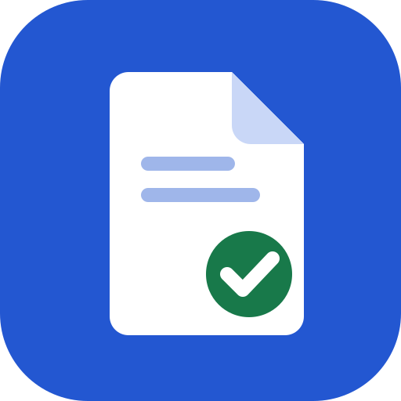

Lettore PDF e P7M per Outlook
Apri, verifica e stampa gli allegati firmati e le fatture elettroniche senza uscire dalla posta.
Dopo l'installazione, aprendo un messaggio trovi il pulsante «Apri allegati»: si apre un riquadro con l'elenco degli allegati.
- I file
.p7m,.tsd,.m7m, i PDF e le fatture elettroniche si aprono con un clic, con la verifica delle firme. - Nelle PEC mostra anche gli allegati contenuti in
postacert.eml. - Se c'è un solo documento da aprire, si apre da solo.
- Il pulsante «Apri in una finestra grande» porta il documento nel lettore a tutto schermo.
Gli allegati vengono letti solo dentro il riquadro, sul tuo dispositivo: non vengono inviati a nessun server.
1. Scarica il file di installazione
Scarica il file per OutlookÈ il «manifest» del componente aggiuntivo: un piccolo file XML che dice a Outlook dove si trova il lettore.
2. Aggiungilo a Outlook
Outlook sul web, nuovo Outlook per Windows e Outlook per Mac
- Apri aka.ms/olksideload: si apre Outlook con la finestra dei componenti aggiuntivi.
- Scegli Componenti aggiuntivi personali.
- In fondo, sotto Componenti aggiuntivi personalizzati, premi Aggiungi un componente aggiuntivo personalizzato → Aggiungi da file….
- Seleziona il file scaricato e conferma con Installa.
Outlook classico per Windows
- Nella scheda Home premi Ottieni componenti aggiuntivi (o Tutte le app → Aggiungi app).
- Poi segui gli stessi passaggi: Componenti aggiuntivi personali → Aggiungi un componente aggiuntivo personalizzato → Aggiungi da file….
Basta installarlo una volta: compare in tutti gli Outlook collegati allo stesso account.
3. Usalo
- Apri un messaggio con allegati.
- Premi Apri allegati nella barra del messaggio. In Outlook sul web lo trovi anche nel menu … → App.
- Per tenere il riquadro aperto mentre cambi messaggio, premi l'icona della puntina.
Disinstallare
Torna in aka.ms/olksideload → Componenti aggiuntivi personali, apri il menu … accanto a «Lettore PDF e P7M» e scegli Rimuovi.